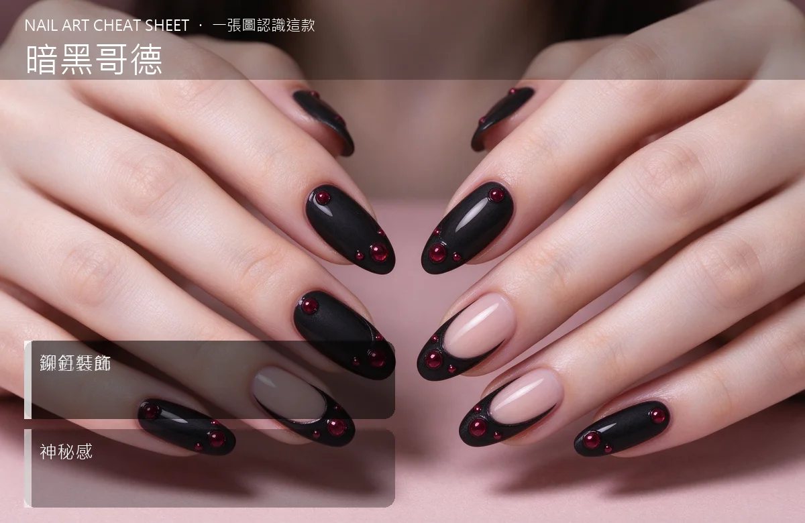

美甲暗黑哥德是什麼？中階入門攻略
暗黑哥德美甲是黑、酒紅、深紫加上鉚釘和十字架，整隻手像搖滾演唱會的後台。
暗黑哥德原理與辨識重點：美甲師不說的深色打底
哥德風（Gothic）美甲走的是『神秘、華麗、有距離感』的路線：黑、深酒紅、墨綠、深紫這類低明度色為主，加上鉚釘、十字架、小蜘蛛、黑色蕾絲貼紙等元素。霧面封層比亮面更對味，因為亮面太活潑。
誰適合做暗黑哥德？個性款對號入座
喜歡搖滾、龐克、華麗哥德穿搭的人；平常穿全黑、黑色洋裝、皮衣、項鍊上有十字架的人；要去搖滾祭、扮裝趴、或拍藝術照的人。
暗黑哥德美甲施作步驟：黑色＋暗紅＋鉚釘
上好黑或深酒紅底 → 跳指做霧面封層 → 在指根或側邊用凝膠貼小鉚釘、十字架、小蜘蛛 → 局部拉一條銀色細線 → 壓緊 → 封層把金屬根部包好 → 照燈。
暗黑哥德優缺點分析：美甲持久度與傷甲評估
| 優點 | 說明 |
|---|---|
| 個性強烈、跟暗黑系穿搭完美 match、低調的人戴了反而有一種反差美。 | 是歐美流派的招牌，中階就能上手 |
| 缺點 | 說明 |
| 深色底如果沒上底膠很容易把真甲染黑；金屬飾品勾頭髮；長輩看到可能會皺眉。 | 前置與別忘了打底膠——黑、深酒紅是染甲冠軍，沒打底之後卸甲，你的真甲會灰灰黃黃好一陣子。沒顧好會打折 |

暗黑哥德新手雷區：鉚釘裝飾與常見錯誤
注意：別忘了打底膠——黑、深酒紅是染甲冠軍，沒打底之後卸甲，你的真甲會灰灰黃黃好一陣子。
暗黑哥德和其他美甲做法的差別比較
跟『Y2K』都很個性，但 Y2K 是甜美的囂張，哥德是冷峻的囂張，顏色和氣味完全相反。
暗黑哥德美甲常見問題 FAQ
Q：黃皮做深色會不會顯黑？ A：深酒紅、墨綠、深紫這類有調性的深色反而會襯得手白；純黑配黃皮會有一點對比，配暖一點的膚色反而好看。
Q：金屬飾品會不會生鏽？ A：美甲用的鉚釘和十字架是專用飾品，本身防鏽，但如果洗澡常常泡到水，久了會一點點霧。封層包好可以延長。
Q：一般上班能做嗎？ A：一般辦公室真的不太建議，但設計業、藝術業、音樂業很可以。